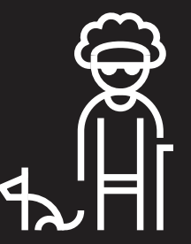

Touch
See
Hear
Speak
Process
Move
Online
Permanent
 One arm
One arm

Blind
Deaf
Non-verbal
Neuroatypical
Wheelchair user
Weak internet
Temporary
Arm injury
Cataract
Ear infection
Laryngitis
Concussion
Broken leg
Traveling
Situational
New parent
Distracted driver
Bartender
Heavy accent
Stress
Snow mound
In metro